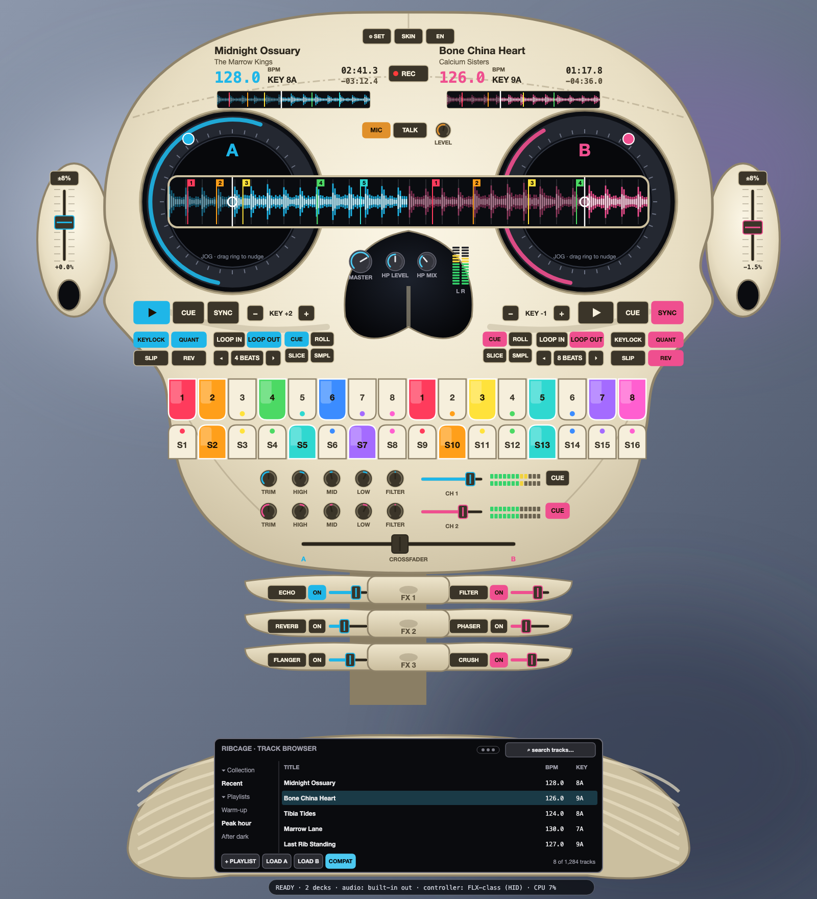
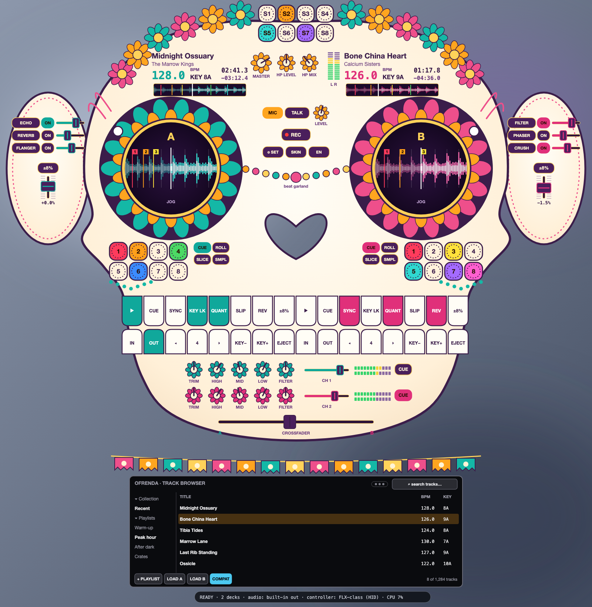
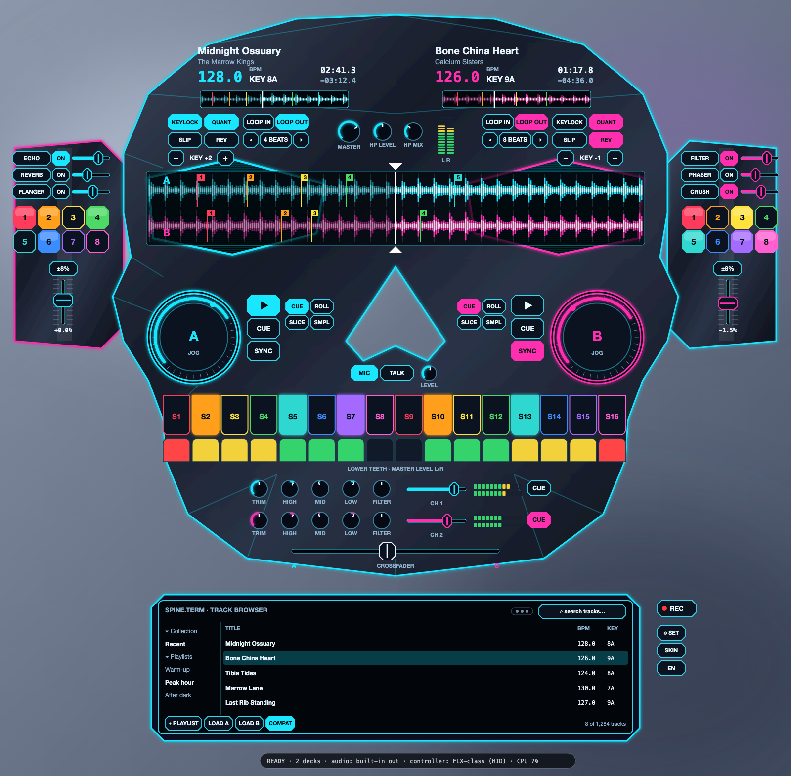
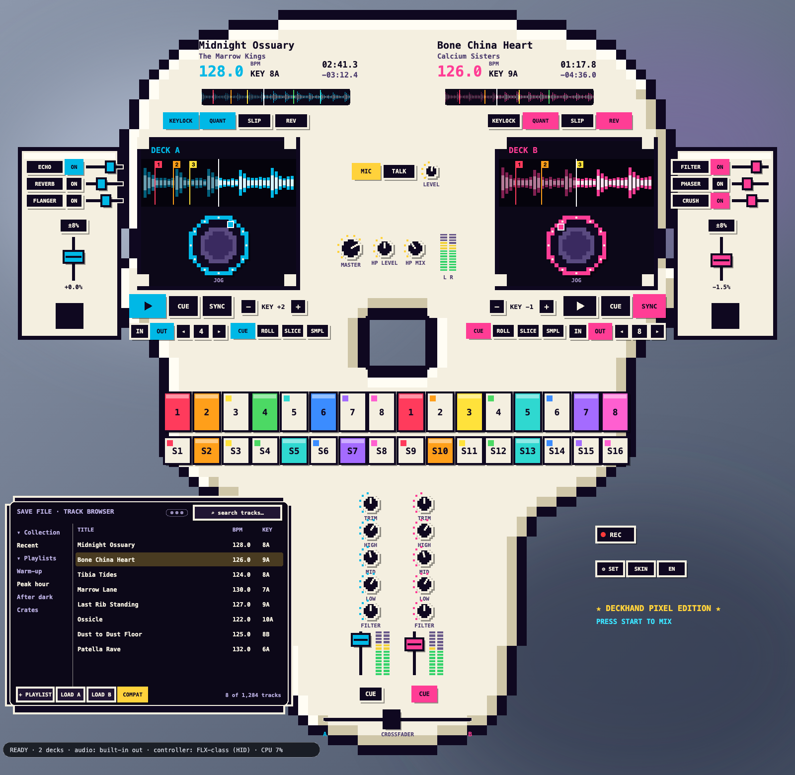
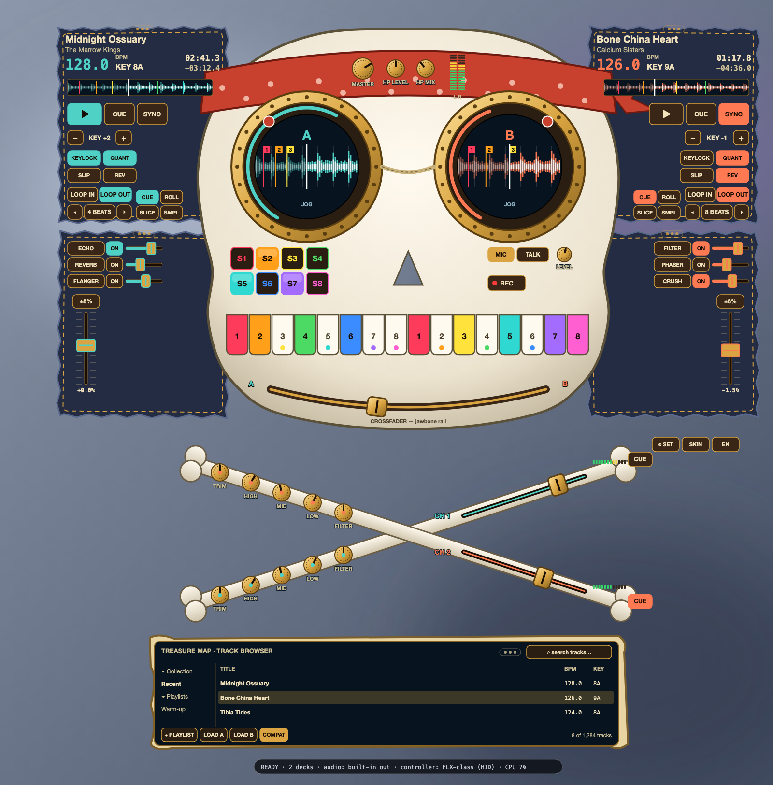
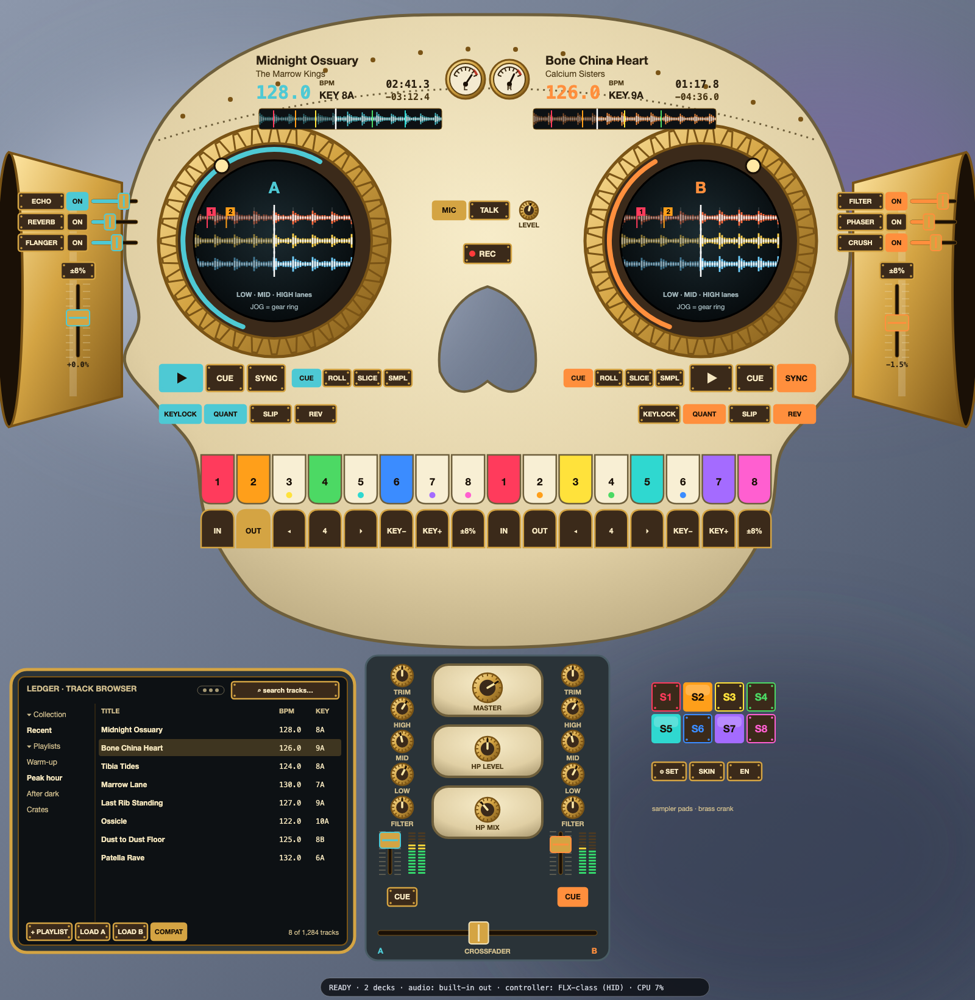
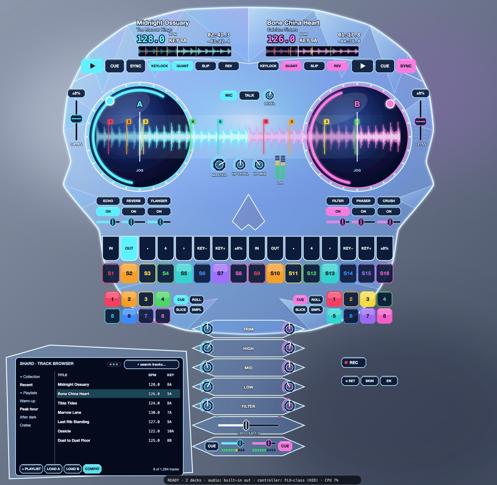
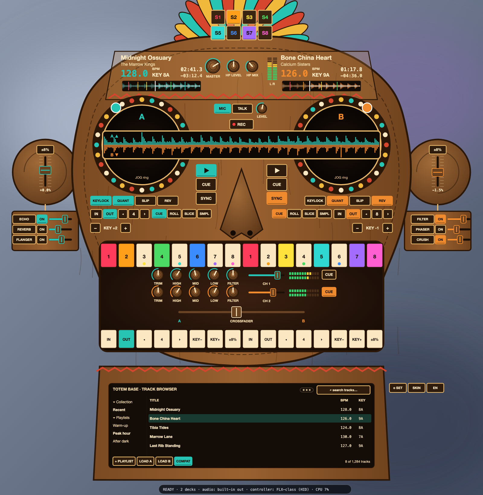
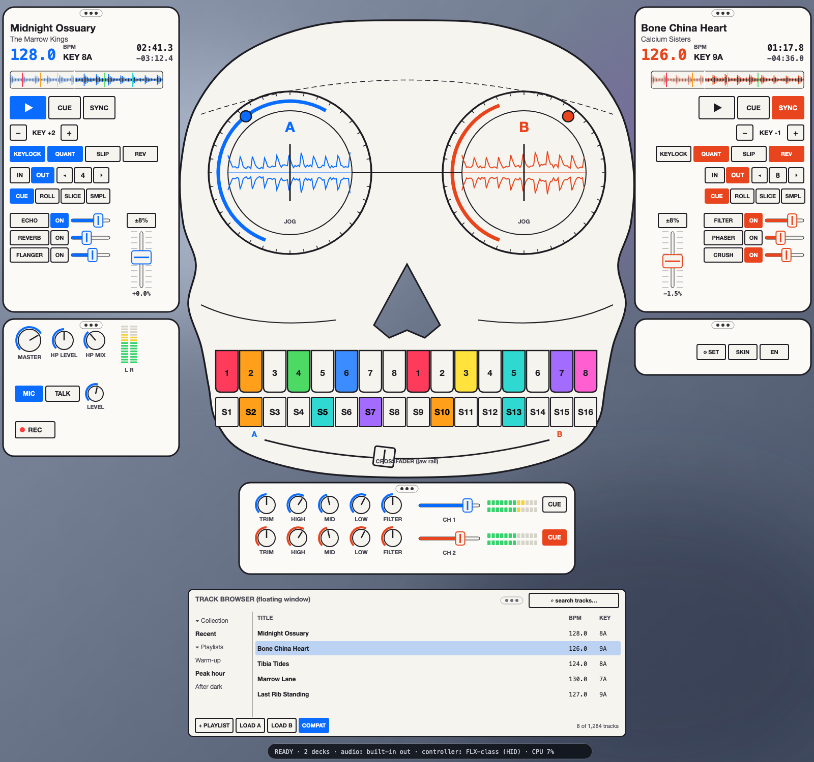
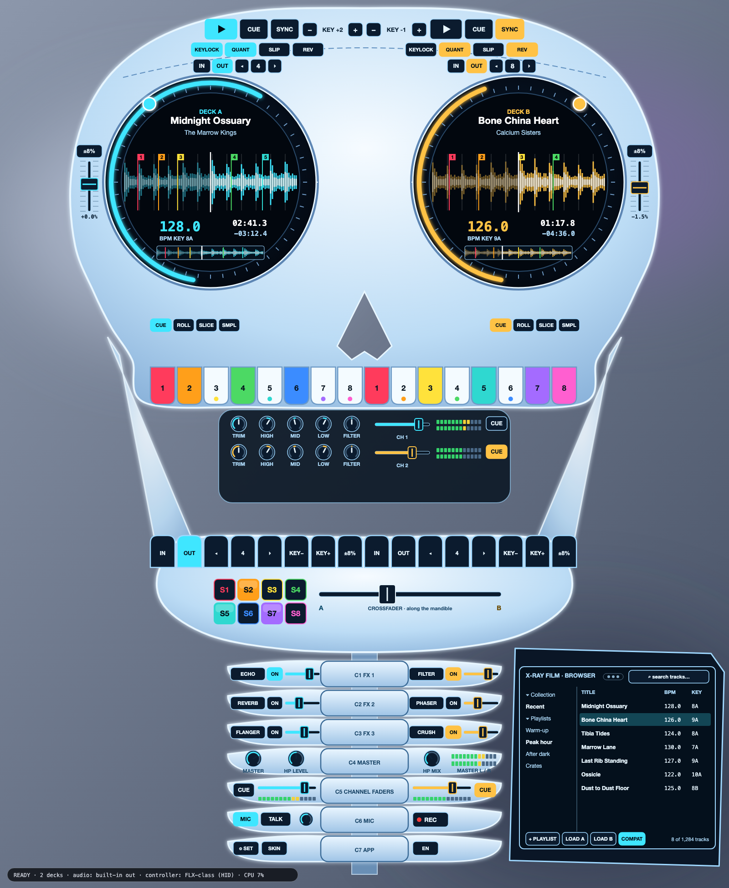

DeckHand skull skins
Ten directions for the skull skin. Each skull is shown over a wallpaper; the real window is transparent and shaped, and the browser and other big modules float separately. Contact sheet.

Comparison
| Concept | Style | Windows | Density | Hardest engine requirement | Usability |
|---|---|---|---|---|---|
| 01 Anatomical Ivory | Clean vector, ivory bone on charcoal plates | Skull + ribcage browser + status pill | Medium | Shaped window with holes | 4/5 plain labels, every region has one job |
| 02 Sugar Skull | Dia de los Muertos ornament, flowers, papel picado | Skull + bunting-framed browser | Dense, decorative | Petal/tooth shaped widgets | 3/5 ornament competes with labels |
| 03 Neon Chrome | Faceted chrome skull, neon edge glow, holographic visors | Skull + terminal browser + app strip | Dense | Glow and polygon clipping | 4/5 high contrast, clear lanes |
| 04 Pixel Art | 8/16-bit pixels, chunky, playful | Skull + save-file browser + arcade corner | Medium, big targets | Pixel-exact scaling | 3/5 big and clear, long jaw makes mixer far from decks |
| 05 Pirate Scraps | Jolly Roger skull, crossed bones, brass and torn sailcloth | Skull + 4 cloth scraps + chart browser | Dense, scattered | Curved and diagonal faders | 2/5 diagonal faders and scattered scraps |
| 06 Steampunk | Aged bone, brass, rivets, needle gauges | Skull + brass console + ledger browser + sampler/app tray | Dense | Needle gauges and 3-band lanes | 3/5 rivets are busy; three-band lanes are small |
| 07 Crystal Glass | Translucent crystal, internal light, gem controls | Skull + shard browser + app tray | Dense | Blur/glow and blend | 3/5 translucency lowers label contrast on bright wallpapers |
| 08 Tiki Mask | Carved wood, inlay beads, feathers | Mask + hanging planks + totem browser | Dense | Mouth as mixer, mirrored lanes | 3/5 wood is dark but mouth mixer is far from eyes |
| 09 Wireframe Diagram | Single-line drawing on paper, almost a technical diagram | Skull + 2 deck panels + master panel + app panel + browser | Light, maximum clarity | Curved jaw slider | 5/5 high contrast, everything labelled, nothing hidden |
| 10 X-Ray Open Jaw owner request | Radiograph skull, caricature sockets, jaw dropped, cervical spine | Skull + X-ray film browser (only the browser floats) | Highest, performance-first | Ring jog with text/waveform inside | 4/5 largest targets, everything on one surface |
Every concept needs, first: Per-window transparency with shaped hit-testing (outline + cut-out holes such as nasal cavity and open mouth; clicks fall through transparent pixels); Multiple independent floating windows with remembered positions, optional snapping/docking to each other; Drag-region / grip declaration per window (move the window by a skull part or frame grip, no title bar).
01 Anatomical Ivory

A restrained, anatomically literal ivory skull: each eye is a jog ring around a dark socket, and one continuous waveform band runs through both sockets and across the nasal bridge with a playhead at each pupil. Controls sit on dark engraved plates so nothing competes with the bone.
Control map
| Anatomy | Controls |
|---|---|
| Eye sockets | Jog ring (marker, progress arc), waveform band with playhead at pupil, deck letter |
| Forehead / cranium | Title, artist, BPM, key, time, remaining, mini overview; app buttons and REC at the crown |
| Cheekbones | Play / cue / sync, key shift, key lock / quantise / slip / reverse, loop in/out/size, pad modes |
| Ears | Tempo fader + range |
| Nasal bridge / cavity | Mic on / talk / level; master, headphone level, headphone mix, master meter |
| Upper teeth | 16 teeth = 8 hot-cue pads A | 8 pads B |
| Lower teeth | 16 sampler pads |
| Mandible | Two channel rows (trim, EQ, filter, fader, meters, cue) and crossfader |
| Vertebrae | 3 vertebrae = 3 FX slots, deck A left wing, deck B right wing |
Floating windows
Ribcage browser (rib-cage silhouette with grip) and a status pill float below the spine. Browser: rib cage. Status: pill.
Engine needs
- Per-window transparency with shaped hit-testing (outline + cut-out holes such as nasal cavity and open mouth; clicks fall through transparent pixels)
- Multiple independent floating windows with remembered positions, optional snapping/docking to each other
- Drag-region / grip declaration per window (move the window by a skull part or frame grip, no title bar)
- Annular/round jog widget: ring hit-test, rotating position marker, progress arc, centre area that passes clicks to the waveform inside
- Waveform (and text) widgets clipped to a circle/polygon (eye socket, visor, lens) instead of a rectangle
- Per-widget shape outlines for buttons/pads (tooth, chamfer, gem, petal) with per-pixel hit testing
- Animations on containers (transform/opacity of a group including children): jaw drop/sway, eye pulse, vertebra bounce
- Band that crosses from one socket across bone to the other is a single wide widget with two playheads.
Usability
Hardest to use: 16-tooth rows need 58 px pitch; the FX rack sits far from the decks. Easiest: strict one-job-per-region mapping, large pads, readable text.

02 Sugar Skull

A sugar skull whose eyes are flower rosettes that spin as the jog while each holds its own waveform lane; every knob is a marigold flower. Teeth are real buttons (both rows), pads move to the cheeks, and a strand of beat beads links the eyes.
Control map
| Anatomy | Controls |
|---|---|
| Eye rosettes | Jog (petal ring + marker), waveform lane through the socket centre |
| Forehead | Info, overview, master / headphone knobs (flowers) and master meter |
| Crown flowers | 8 sampler pads |
| Ears | FX rows (3 slots) + tempo fader and range |
| Cheekbones | 8 hot-cue pads per deck (rounded), pad modes |
| Upper teeth | Play, cue, sync, key lock, quantise, slip, reverse, range |
| Lower teeth | Loop in/out/size, key shift -/+, eject |
| Nasal bridge | Mic, REC, settings / skin / language, beat garland |
| Jaw | Two channel rows with flower knobs, crossfader |
Floating windows
Browser on an ofrenda panel strung with papel-picado bunting; status pill. Browser: bunting-topped plaque. Status: pill.
Engine needs
- Per-window transparency with shaped hit-testing (outline + cut-out holes such as nasal cavity and open mouth; clicks fall through transparent pixels)
- Multiple independent floating windows with remembered positions, optional snapping/docking to each other
- Drag-region / grip declaration per window (move the window by a skull part or frame grip, no title bar)
- Annular/round jog widget: ring hit-test, rotating position marker, progress arc, centre area that passes clicks to the waveform inside
- Waveform (and text) widgets clipped to a circle/polygon (eye socket, visor, lens) instead of a rectangle
- Per-widget shape outlines for buttons/pads (tooth, chamfer, gem, petal) with per-pixel hit testing
- Animations on containers (transform/opacity of a group including children): jaw drop/sway, eye pulse, vertebra bounce
- Style properties (glow, opacity, scale, rotate) bindable to level meters and beat phase (eye glow follows level, teeth light as VU)
- Flower-shaped knobs need a petal sprite that rotates with value.
Usability
Harder than default: labels on busy ornament, buttons moved onto teeth make the grouping unfamiliar. Easier: huge round targets and strong colour per function.

03 Neon Chrome

A low-poly chrome skull with slanted holographic visors for eyes: the two decks share one band of stacked lanes (A on top, B below) that scrolls through both visors with a single playhead at the nasal bridge. Jog platters are HUD discs on the cheekbones; the ears are cyber headphone cups full of controls.
Control map
| Anatomy | Controls |
|---|---|
| Visors | Stacked waveform lanes A / B, central playhead |
| Forehead | Info, overview, key lock / quantise / slip / reverse, loop, key shift, master section |
| Cheekbones | Jog HUD disc, transport (vertical), pad modes |
| Headphone ears | FX rows, 8 hot-cue pads, tempo + range |
| Nose | Mic on / talk / level |
| Upper teeth | 16 sampler pads |
| Lower teeth | Master level L/R as 16 lit segments |
| Mandible | Channel rows, crossfader |
| Spine terminal (floating) | Track browser; REC and app buttons beside it |
Floating windows
Terminal browser (chamfered window), REC, settings / skin / language strip (small separate window). Browser: chamfered rectangle. App strip: chamfered capsule.
Engine needs
- Per-window transparency with shaped hit-testing (outline + cut-out holes such as nasal cavity and open mouth; clicks fall through transparent pixels)
- Multiple independent floating windows with remembered positions, optional snapping/docking to each other
- Drag-region / grip declaration per window (move the window by a skull part or frame grip, no title bar)
- Annular/round jog widget: ring hit-test, rotating position marker, progress arc, centre area that passes clicks to the waveform inside
- Waveform (and text) widgets clipped to a circle/polygon (eye socket, visor, lens) instead of a rectangle
- Per-widget shape outlines for buttons/pads (tooth, chamfer, gem, petal) with per-pixel hit testing
- Waveform layouts: stacked lanes (3-band), mirrored shared-centreline halves, outline/line mode, glow beam
- Soft glow / blur and additive blend per widget
- Style properties (glow, opacity, scale, rotate) bindable to level meters and beat phase (eye glow follows level, teeth light as VU)
- Shared two-lane waveform with one playhead is one widget with two decks bound.
Usability
Harder: the shared playhead hides each deck's own position until you learn it. Easier: very high contrast, deck colours obvious, pads and jog well separated.

04 Pixel Art

A chunky pixel skull on a 20 px grid whose sockets are small arcade screens: waveform lane above, a stepped-disc platter below. The jaw is long so the mixer fits as two vertical strips, like a classic channel pair.
Control map
| Anatomy | Controls |
|---|---|
| Eye sockets | Waveform lane + jog platter (pixel disc, square marker) |
| Forehead | Info, overview, key lock / quantise / slip / reverse |
| Cheekbones | Transport, key shift, loop, pad modes |
| Ears | FX rows, tempo + range |
| Nose | Master section, mic |
| Upper teeth | 16 hot-cue pads |
| Lower teeth | 16 sampler pads |
| Long jaw | Two vertical channel strips, crossfader at the chin |
| Floating | Save-file browser; REC, app buttons, title banner |
Floating windows
Save-file browser and an arcade corner (REC, settings / skin / language). Browser: pixel-notched window. Corner: loose pixel buttons.
Engine needs
- Per-window transparency with shaped hit-testing (outline + cut-out holes such as nasal cavity and open mouth; clicks fall through transparent pixels)
- Multiple independent floating windows with remembered positions, optional snapping/docking to each other
- Drag-region / grip declaration per window (move the window by a skull part or frame grip, no title bar)
- Annular/round jog widget: ring hit-test, rotating position marker, progress arc, centre area that passes clicks to the waveform inside
- Nearest-neighbour integer scaling and a bitmap font (no smoothing) for the pixel look
- Animations on containers (transform/opacity of a group including children): jaw drop/sway, eye pulse, vertebra bounce
- Skin must keep to integer scale factors so pixels stay square.
Usability
Easier: huge flat targets, no thin lines. Harder: stepped jog gives coarse visual feedback; waveform lane is small.

05 Pirate Scraps

A bandana-wearing skull in brass portholes with crossed bones underneath: the bones are the mixer, with EQ knobs strung along each bone and a brass cap that slides diagonally for the channel fader. Deck controls live on four torn sailcloth scraps that float beside the skull.
Control map
| Anatomy | Controls |
|---|---|
| Portholes (eyes) | Jog ring with rivets, waveform lane |
| Bandana | Master, headphone level / mix, master meter |
| Cloth scrap A / B (floating) | Info, overview, transport, key shift, toggles, loop, pad modes |
| Lower scraps (floating) | FX rows, tempo + range |
| Upper teeth | 16 hot-cue pads |
| Cheekbones | Sampler (left), mic + REC (right) |
| Jaw | Crossfader on a curved brass rail |
| Crossed bones | Trim, EQ, filter knobs; channel faders slide along the bones; meters and cue at the bone ends |
| Floating | Treasure-map browser, app buttons |
Floating windows
Four cloth scraps (deck A, deck B, FX A, FX B), treasure-map browser, app buttons. Scraps: torn sailcloth with stitched border. Browser: torn parchment map.
Engine needs
- Per-window transparency with shaped hit-testing (outline + cut-out holes such as nasal cavity and open mouth; clicks fall through transparent pixels)
- Multiple independent floating windows with remembered positions, optional snapping/docking to each other
- Drag-region / grip declaration per window (move the window by a skull part or frame grip, no title bar)
- Annular/round jog widget: ring hit-test, rotating position marker, progress arc, centre area that passes clicks to the waveform inside
- Waveform (and text) widgets clipped to a circle/polygon (eye socket, visor, lens) instead of a rectangle
- Per-widget shape outlines for buttons/pads (tooth, chamfer, gem, petal) with per-pixel hit testing
- Slider/fader travelling along a path (arc jaw rail, diagonal bone) with matching hit-testing
- Rotated widgets (fader caps and knob rows on a diagonal)
- Animations on containers (transform/opacity of a group including children): jaw drop/sway, eye pulse, vertebra bounce
- Channel faders are sliders along a straight but rotated track.
Usability
Hardest of the set: diagonal faders are awkward and the deck panels are far from the skull. Easiest to read: big brass knobs.

06 Steampunk

Aged bone in brass goggles whose gear rims are the jog rings; each goggle shows low, mid and high bands as three stacked lanes. Brass trumpets for ears carry the effects and tempo, and the mixer is a separate riveted console with a vertebra stack for master and headphones.
Control map
| Anatomy | Controls |
|---|---|
| Goggles (eyes) | Gear-ring jog, 3-band stacked waveform lanes |
| Forehead | Info, overview, L/R needle gauges (master level) |
| Cheekbones | Transport, pad modes, key lock / quantise / slip / reverse |
| Trumpet ears | FX rows, tempo + range |
| Nose | Mic, REC |
| Upper teeth | 16 hot-cue pads |
| Lower teeth | Loop in/out/size, key shift, range |
| Console (floating) | Two channel strips, crossfader; three vertebrae = master, headphone level, headphone mix |
| Floating | Ledger browser, sampler + app tray |
Floating windows
Brass console, ledger browser, tray with sampler and app buttons. Console: riveted brass plate. Browser: brass-bound ledger. Tray: loose brass buttons.
Engine needs
- Per-window transparency with shaped hit-testing (outline + cut-out holes such as nasal cavity and open mouth; clicks fall through transparent pixels)
- Multiple independent floating windows with remembered positions, optional snapping/docking to each other
- Drag-region / grip declaration per window (move the window by a skull part or frame grip, no title bar)
- Annular/round jog widget: ring hit-test, rotating position marker, progress arc, centre area that passes clicks to the waveform inside
- Waveform (and text) widgets clipped to a circle/polygon (eye socket, visor, lens) instead of a rectangle
- Per-widget shape outlines for buttons/pads (tooth, chamfer, gem, petal) with per-pixel hit testing
- Waveform layouts: stacked lanes (3-band), mirrored shared-centreline halves, outline/line mode, glow beam
- Value-driven rotation (needle gauges bound to meters)
- Animations on containers (transform/opacity of a group including children): jaw drop/sway, eye pulse, vertebra bounce
- Style properties (glow, opacity, scale, rotate) bindable to level meters and beat phase (eye glow follows level, teeth light as VU)
- Gear-toothed rim is just a sprite that rotates with position.
Usability
Harder: rivet detail is visual noise; stacked band lanes are only 34 px tall. Easier: gauges give master level at a glance, console is conventional.

07 Crystal Glass

A faceted crystal skull lit from inside: the eyes are glass orbs and the waveform is a beam of light passing through both orbs and the bridge. Knobs and pads are cut gems, the brow ridge carries the transport, and the mixer is a spine of crystal segments.
Control map
| Anatomy | Controls |
|---|---|
| Orbs (eyes) | Jog ring with gem studs, light-beam waveform through both orbs |
| Brow ridge | Play / cue / sync and key lock / quantise / slip / reverse |
| Forehead | Info, overview |
| Temples | Tempo + range |
| Cheekbones | FX slots (3 columns) |
| Nasal cavity / bridge | Master section; mic |
| Jaw | 8 hot-cue pads + pad modes per deck |
| Upper teeth | Loop in/out/size, key shift, range |
| Lower teeth | 16 sampler pads |
| Crystal spine | Trim / EQ / filter rows (A left, B right), crossfader, faders, meters, cue |
| Floating | Shard browser, REC + app buttons |
Floating windows
Crystal-shard browser, REC and app buttons tray. Browser: irregular quadrilateral shard. Tray: gem-cut buttons.
Engine needs
- Per-window transparency with shaped hit-testing (outline + cut-out holes such as nasal cavity and open mouth; clicks fall through transparent pixels)
- Multiple independent floating windows with remembered positions, optional snapping/docking to each other
- Drag-region / grip declaration per window (move the window by a skull part or frame grip, no title bar)
- Annular/round jog widget: ring hit-test, rotating position marker, progress arc, centre area that passes clicks to the waveform inside
- Waveform (and text) widgets clipped to a circle/polygon (eye socket, visor, lens) instead of a rectangle
- Per-widget shape outlines for buttons/pads (tooth, chamfer, gem, petal) with per-pixel hit testing
- Waveform layouts: stacked lanes (3-band), mirrored shared-centreline halves, outline/line mode, glow beam
- Soft glow / blur and additive blend per widget
- Style properties (glow, opacity, scale, rotate) bindable to level meters and beat phase (eye glow follows level, teeth light as VU)
- Needs additive blending so the beam reads as light.
Usability
Harder: translucent skin changes contrast with the wallpaper; the beam hides cue flags in loud sections. Easier: spine rows make the EQ matrix obvious.

08 Tiki Mask

A tall carved mask: the eyes are rings of coloured beads (the jog) and a single inlaid band runs through both with deck A growing upward and deck B downward from a shared centre line. The huge mouth is the mixer, framed by two rows of teeth.
Control map
| Anatomy | Controls |
|---|---|
| Eyes | Bead-ring jog, shared-centreline waveform A up / B down |
| Forehead plaque | Info, overview, master section |
| Feather crown | 8 sampler pads |
| Nose bridge | Transport (vertical), mic, REC |
| Cheeks | Toggles, loop, key shift, pad modes |
| Ear discs | Tempo + range |
| Hanging planks | FX rows |
| Upper teeth (mouth) | 16 hot-cue pads |
| Mouth cavity | Two channel rows, crossfader |
| Lower teeth (mouth) | Loop in/out/size, key shift, range |
| Floating | Totem-base browser, app buttons |
Floating windows
Totem-base browser, hanging FX planks, app buttons. Browser: carved totem trapezoid. Planks: wooden tags on cords.
Engine needs
- Per-window transparency with shaped hit-testing (outline + cut-out holes such as nasal cavity and open mouth; clicks fall through transparent pixels)
- Multiple independent floating windows with remembered positions, optional snapping/docking to each other
- Drag-region / grip declaration per window (move the window by a skull part or frame grip, no title bar)
- Annular/round jog widget: ring hit-test, rotating position marker, progress arc, centre area that passes clicks to the waveform inside
- Waveform layouts: stacked lanes (3-band), mirrored shared-centreline halves, outline/line mode, glow beam
- Animations on containers (transform/opacity of a group including children): jaw drop/sway, eye pulse, vertebra bounce
- Mirrored waveform halves are two decks drawn on one centre line.
Usability
Harder: mirrored lanes make it unclear which half belongs to which deck at a glance. Easier: the mouth mixer is large and central.

09 Wireframe Diagram

The skull is only an outline: eyes are jog rings with a thin line-drawn waveform (one continuous line crossing the bridge), teeth are pads, and the crossfader rides the jaw curve. Every other control lives on clean paper panels that float beside it, so the drawing stays calm and usability stays maximal.
Control map
| Anatomy | Controls |
|---|---|
| Eyes | Jog ring, line-drawn waveform with playhead |
| Upper teeth | 16 hot-cue pads |
| Lower teeth | 16 sampler pads |
| Jaw | Crossfader on a curved rail |
| Deck panels A / B (floating) | Info, overview, transport, key shift, toggles, loop, pad modes, FX, tempo |
| Master panel (floating) | Master, headphone, meter, mic, REC |
| Under the chin | Two channel rows |
| Floating | Browser panel, app buttons panel |
Floating windows
Two deck panels, master/mic panel, app panel, browser. Panels: rounded paper tiles with grip. Browser: same.
Engine needs
- Per-window transparency with shaped hit-testing (outline + cut-out holes such as nasal cavity and open mouth; clicks fall through transparent pixels)
- Multiple independent floating windows with remembered positions, optional snapping/docking to each other
- Drag-region / grip declaration per window (move the window by a skull part or frame grip, no title bar)
- Annular/round jog widget: ring hit-test, rotating position marker, progress arc, centre area that passes clicks to the waveform inside
- Waveform (and text) widgets clipped to a circle/polygon (eye socket, visor, lens) instead of a rectangle
- Per-widget shape outlines for buttons/pads (tooth, chamfer, gem, petal) with per-pixel hit testing
- Slider/fader travelling along a path (arc jaw rail, diagonal bone) with matching hit-testing
- Waveform layouts: stacked lanes (3-band), mirrored shared-centreline halves, outline/line mode, glow beam
- Line-mode waveform (outline only) is the main new drawing mode.
Usability
Easiest of the ten: same density as the default skin, big text, high contrast. Hardest part is that six windows must be arranged by the user.

10 X-Ray Open Jaw owner request

Owner's request: caricature-large eye sockets, the jaw dropped wide open and the full cervical spine on show. The sockets hold the whole deck read-out (title, big waveform, BPM, time, overview) inside a giant jog ring; the open mouth holds the mixer; seven vertebrae carry FX, master, faders, mic and app buttons, so only the browser floats.
Control map
| Anatomy | Controls |
|---|---|
| Giant sockets | Jog ring (464 px), 380x124 waveform with cues and playhead, title, artist, BPM, key, time, remaining, overview |
| Brow | Play / cue / sync, key shift, key lock / quantise / slip / reverse, loop in/out/size |
| Temples | Tempo + range |
| Cheekbones | Pad modes |
| Upper teeth | 16 hot-cue pads |
| Open mouth | Two channel rows (trim, EQ, filter, fader, meters, cue) |
| Lower teeth | Loop in/out/size, key shift, range |
| Mandible | 8 sampler pads, crossfader along the jawbone |
| Vertebrae C1-C3 | FX slot 1-3, deck A left wing, deck B right wing |
| C4 | Master, headphone level / mix, master meter |
| C5 | Channel faders, meters, cue |
| C6 | Mic on / talk / level, REC |
| C7 | Settings, skin, language |
| Floating | X-ray film browser (only floating module) |
Floating windows
Only the track browser floats (X-ray film sheet with grip, slightly tilted) plus the status pill. Browser: X-ray film with rounded corners. Status: pill.
Engine needs
- Per-window transparency with shaped hit-testing (outline + cut-out holes such as nasal cavity and open mouth; clicks fall through transparent pixels)
- Multiple independent floating windows with remembered positions, optional snapping/docking to each other
- Drag-region / grip declaration per window (move the window by a skull part or frame grip, no title bar)
- Annular/round jog widget: ring hit-test, rotating position marker, progress arc, centre area that passes clicks to the waveform inside
- Waveform (and text) widgets clipped to a circle/polygon (eye socket, visor, lens) instead of a rectangle
- Per-widget shape outlines for buttons/pads (tooth, chamfer, gem, petal) with per-pixel hit testing
- Soft glow / blur and additive blend per widget
- Style properties (glow, opacity, scale, rotate) bindable to level meters and beat phase (eye glow follows level, teeth light as VU)
- Animations on containers (transform/opacity of a group including children): jaw drop/sway, eye pulse, vertebra bounce
- Text and waveform must clip to the round socket interior.
Usability
Harder: tall window (1890 px), the spine and the mouth mixer need scrolling or a large display; effects are far from the decks. Easier: biggest waveforms and jogs, no module hunting, everything on one surface.
On-surface: On-surface comparison: waveform area 380x124 per eye (47k px2) against 244x100 in #1 (about 1.9x); jog diameter 464 px against 356 px (1.7x area); deck read-out (title, BPM, time, overview) moves into the sockets, which frees the forehead; mixer, sampler, FX, master, mic, REC and app buttons are all on the main window (about 30 of 33 inventory blocks, only the browser floats; #5 and #9 float 4-6 modules, #6 floats 3). The window is also the tallest (1890 px) because of the spine.

Consolidated engine needs
- Per-window transparency with shaped hit-testing (outline + cut-out holes such as nasal cavity and open mouth; clicks fall through transparent pixels) (10 of 10)
- Multiple independent floating windows with remembered positions, optional snapping/docking to each other (10 of 10)
- Drag-region / grip declaration per window (move the window by a skull part or frame grip, no title bar) (10 of 10)
- Annular/round jog widget: ring hit-test, rotating position marker, progress arc, centre area that passes clicks to the waveform inside (10 of 10)
- Waveform (and text) widgets clipped to a circle/polygon (eye socket, visor, lens) instead of a rectangle (8 of 10)
- Per-widget shape outlines for buttons/pads (tooth, chamfer, gem, petal) with per-pixel hit testing (8 of 10)
- Animations on containers (transform/opacity of a group including children): jaw drop/sway, eye pulse, vertebra bounce (7 of 10)
- Style properties (glow, opacity, scale, rotate) bindable to level meters and beat phase (eye glow follows level, teeth light as VU) (5 of 10)
- Waveform layouts: stacked lanes (3-band), mirrored shared-centreline halves, outline/line mode, glow beam (5 of 10)
- Soft glow / blur and additive blend per widget (3 of 10)
- Slider/fader travelling along a path (arc jaw rail, diagonal bone) with matching hit-testing (2 of 10)
- Value-driven rotation (needle gauges bound to meters) (1 of 10)
- Nearest-neighbour integer scaling and a bitmap font (no smoothing) for the pixel look (1 of 10)
- Rotated widgets (fader caps and knob rows on a diagonal) (1 of 10)